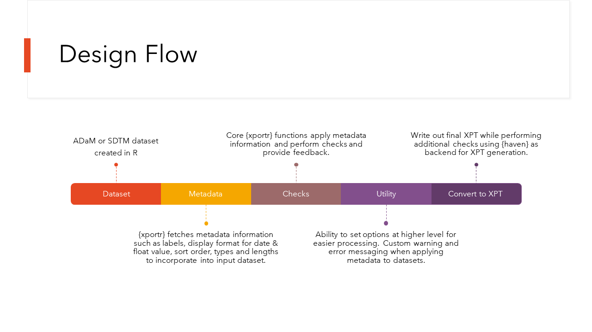

Welcome to xportr! We have designed xportr to help get your xpt files ready for transport either to a clinical data set validator application or to a regulatory agency. This package has the functionality to associate metadata information to a local R data frame, perform data set level validation checks and convert into a transport v5 file(xpt).
As always, we welcome your feedback. If you spot a bug, would like to see a new feature, or if any documentation is unclear - submit an issue on xportr’s GitHub page.
Installation
This package is available from CRAN and can be installed by running:
install.packages("xportr")Development version:
install.packages("xportr", repos = c("https://pharmaverse.r-universe.dev", getOption("repos")))What is xportr?
xportr is designed for clinical programmers to create CDISC compliant xpt files- ADaM or SDTM. Essentially, this package has two big components to it
- Writing xpt files with well-defined metadata
- Checking compliance of the data sets.
The first set of tools are designed to allow a clinical programmer to build a CDISC compliant xpt file directly from R. The second set of tools are to perform checks on your data sets before you send them off to any validators or data reviewers.

What are the checks?
- Variable names must start with a letter (not an underscore), be comprised of only uppercase letters (A-Z), numerals (0-9) and be free of non-ASCII characters, symbols, and underscores.
- Allotted length for each column containing character (text) data should be set to the maximum length of the variable used across all data sets (≤ 200)
- Coerces variables to only numeric or character types
- Display format support for numeric float and date/time values
- Variables names are ≤ 8 characters.
- Variable labels are ≤ 40 characters.
- Data set labels are ≤ 40 characters.
- Presence of non-ASCII characters in Variable Names, Labels or data set labels.
NOTE: Each check has associated messages and warning.
Simple Example
Objective: Create a fully compliant v5 xpt ADSL dataset that was developed using R.
To do this we will need to do the following:
- Apply types
- Apply lengths
- Apply variable labels
- Apply formats
- Re-order the variables
- Apply a dataset label
- Write out a version 5 xpt file
All of which can be done using a well-defined specification file and the xportr package!
First we will start with our ADSL dataset created in R. This example ADSL dataset contains 306 observations and 51 variables.
We have created a dummy specification file called ADaM_spec.xlsx found in the specs folder of this package. You can use system.file(file.path("specs/", "ADaM_spec.xlsx"), package = "xportr") to access this file.
spec_path <- system.file(file.path("specs", "ADaM_spec.xlsx"), package = "xportr")
var_spec <- readxl::read_xlsx(spec_path, sheet = "Variables") %>%
dplyr::rename(type = "Data Type") %>%
dplyr::rename_with(tolower)
dataset_spec <- readxl::read_xlsx(spec_path, sheet = "Datasets") %>%
dplyr::rename(label = "Description") %>%
dplyr::rename_with(tolower)Each xportr_ function has been written in a way to take in a part of the specification file and apply that piece to the dataset. Setting verbose = "warn" will send appropriate warning message to the console. We have suppressed the warning for the sake of brevity.
ADSL %>%
xportr_metadata(var_spec, "ADSL") %>%
xportr_type(verbose = "warn") %>%
xportr_length(verbose = "warn") %>%
xportr_label(verbose = "warn") %>%
xportr_order(verbose = "warn") %>%
xportr_format() %>%
xportr_df_label(dataset_spec, "ADSL") %>%
xportr_write("adsl.xpt")The xportr_metadata() function can reduce duplication by setting the variable specification and domain explicitly at the top of a pipeline. If you would like to use the verbose argument, you will need to set in each function call.
ADSL %>%
xportr_metadata(var_spec, "ADSL", verbose = "warn") %>%
xportr_type() %>%
xportr_length() %>%
xportr_label() %>%
xportr_order() %>%
xportr_format() %>%
xportr_df_label(dataset_spec) %>%
xportr_write("adsl.xpt")Furthermore, if you’re calling all xportr functions at once with common metadata and verbosity, you can shorten it by simply using xportr().
xportr(
.df = ADSL,
var_metadata = var_spec,
df_metadata = dataset_spec,
domain = "ADSL",
verbose = "warn",
"adsl.xpt"
)That’s it! We now have a xpt file created in R with all appropriate types, lengths, labels, ordering and formats. Please check out the Get Started for more information and detailed walk through of each xportr_ function.
We are in talks with other Pharma companies involved with the {pharmaverse} to enhance this package to play well with other downstream and upstream packages.